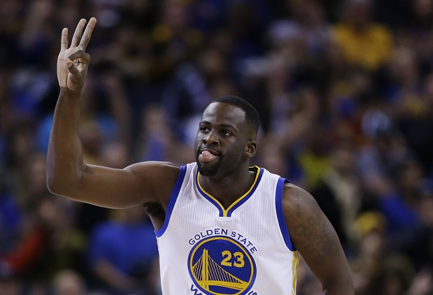
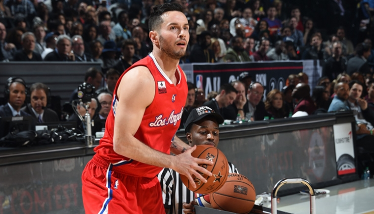
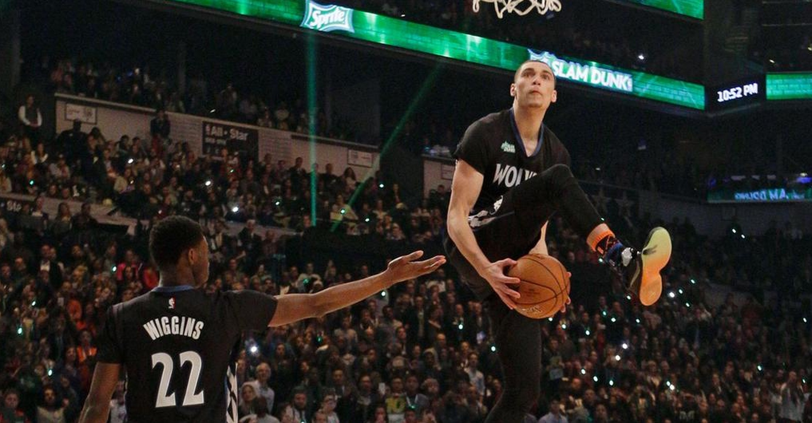
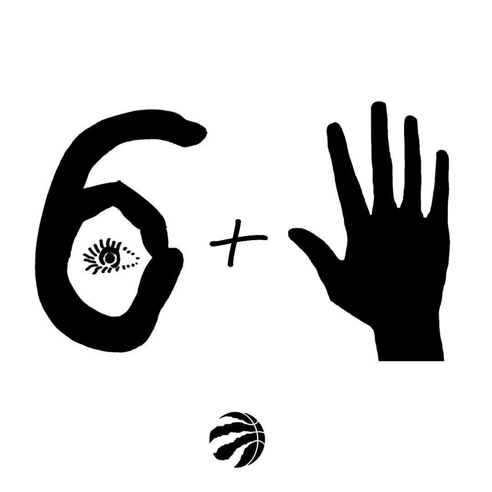

It's finally the weekend! After a couple weeks of dedicated studying, I finally get a week off to study even more. In all honesty, I really do need this week to catch up (learn everything) and prepare for midterms.
It's truly a blessing in contrast to the lack of reading week last semester when I struggled to catch up with the term's work. But the studying will have to take a backseat when the NBA All-star events come on this weekend.
This weekend Toronto will be a star studded station as it hosts the first international All-star weekend.
On Saturday, there will be three main events: Skills Challenge, Three-point Contest, and Slam Dunk Contest. The Skills Challenge features a mix of guards and big men such as Isaiah Thomas, Karl-Anthony Towns, and DeMarcus Cousins. NBA players such as Steph Curry, Klay Thompson, Kyle Lowry, and James Harden will be participating in the 3-point Contest, my personal favourite event.
Finally, Zach LaVine, Aaron Gordon, Will Barton, and Andre Drummond will be in the Dunk Contest.
On Sunday, the ACC will host the All-star game with All-stars including LeBron James, Kobe Bryant, Kevin Durant, Dwyane Wade, and Russell Westbrook.
I've mulled it over, and have came up with my predictions for Saturday's events and the Sunday game.
Saturday
Skills Challenge
The mix of big men has changed the dynamic of the event and it only feels right to put my money on one. I predict Draymond Green will be able to win the competition (may or may not be backed by no logic).

Three-point Contest
This event may be the hottest one on Saturday with the talent pool selected. Honestly any contestant has the chance to win this one (except for Bosh). Steph Curry and Klay Thompson definitely be trying hard in order to get bragging rights, and JJ Redick and Kyle Lowry are not to be ignored.
Also Devin Booker and James Harden could also upset the defending champ. I predict JJ Redick will be able to out shoot Steph and Klay in the final round.

Dunk Contest
The final event is usually the most hyped event on Saturday but I believe Zach LaVine will keep his title with Will "the Thrill" Barton in a close second. LaVine is just too good of a dunker. I just wish they brought back T Ross for another dunk contest!

Sunday
All-Star Game
The annual all-star game will as always be an entertaining night. The highlights will be plenty, and the defense will be non-existant. I predict the West will win again this year with a point total of 176-164. There will be a record amount of points scored due to the emergence of a 3-point centred game.
I can already see the 3-point back-to-backs between Curry, George, Durant, and Lowry. This is also Kobe's final all-star game and you know he isn't going to take an 'L'.
Thanks for reading! Enjoy the weekend!
It's almost reading week and I am still adjusting to my professors and their teaching methods. In some courses I've learned more content by myself than in the drab room we call RCH 302.
I believe I will be doing much of that this reading week as I prepare for midterms. In my opinion, doing well in school is really just finding what works best for yourself and owning it.
That is the true difference between high school and University. The ability to just find your own way and ride or die with it.
In other news, this weekend is NBA All-star weekend in Tdot and will be a huge step forward for the Toronto Raptors.
Toronto has changed from a franchise where players would loathe coming and even playing for to an All-star game destination and a team which has finally kept an All-star (and hopefully two when DeRozan re-signs).
I honestly cannot wait for the weekend!
Today was just a solid Saturday. My schedule was fairly simple: eat, work, eat, work, eat, watch. I know, it sounds boring, but I was able to be fairly productive while slacking off the entire day. This oxymoron can best be described by “Finished two seasons of the office and did my discrete math assignments”. I mean the assignment did take two seasons long, but I probably did more work than Michael Scott did in those seasons.
I was also able to catch the OKC @ GSW game at 9. The game started pretty quick with OKC scoring 9 points extremely quickly but the rest of the first half was dominated by GSW. I believe GSW scored 60 in the first half alone… not too entertaining. Then the second half started. OKC made their run and it brought them to a tight fourth quarter against the defending champions. The possessions became extremely tense with KD replying with a three after Curry’s three. In the end, Curry was able to lead his team to their 41st straight victory in the Oracle.
The game had that playoff atmosphere and only makes me more excited to see the tight Western Conference matchups.
Thanks for reading.
The deadline is soon approaching, and the NBA trade rumours only continue to grow. Which teams will make a move to possibly become contenders? Which teams will look to move pieces after a defeated year?
The Toronto Raptors and the Phoenix Suns are two teams which appear to be participating in the buzz of the trade deadline with a possible move in the front court. Raptors are looking at two players, PJ Tucker and Markieff Morris, inorder to make them a possible contender for the East.
Is it enough?
What will it take?
Who really cares? Have a great wednesday!
Today was a good day, for a Monday. I did some productive work, including 103 and caught up on a couple TV series. I was also able to catch the Raps game at 9. The game was just one of those games where your team is never really into it and the deficit just continues to grow. In all the games I've seen at the Pepsi Centre, the away team struggles shooting and keeping up with the Colorado atmosphere and the Raptors were no exception. Derozan gave it his all tonight while Kyle was truly struggling in all aspects of his game. It was a good game from the Nuggets, but the Raptors were never truly there.
Denver just utilized their atmos-fear.
Idrk haha.

This is my first post! Today has been a productive day as I've completed my Math Assignment and the Raptors won against the Pistons at home. They capped off a 7 game homestand with a solid W against Drummond's Pistons. The win continues their 11 game win streak before they head out onto the road in Denver on Monday.